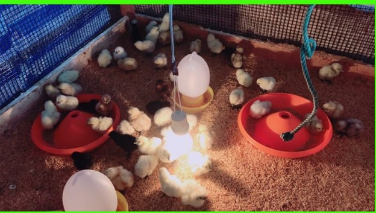
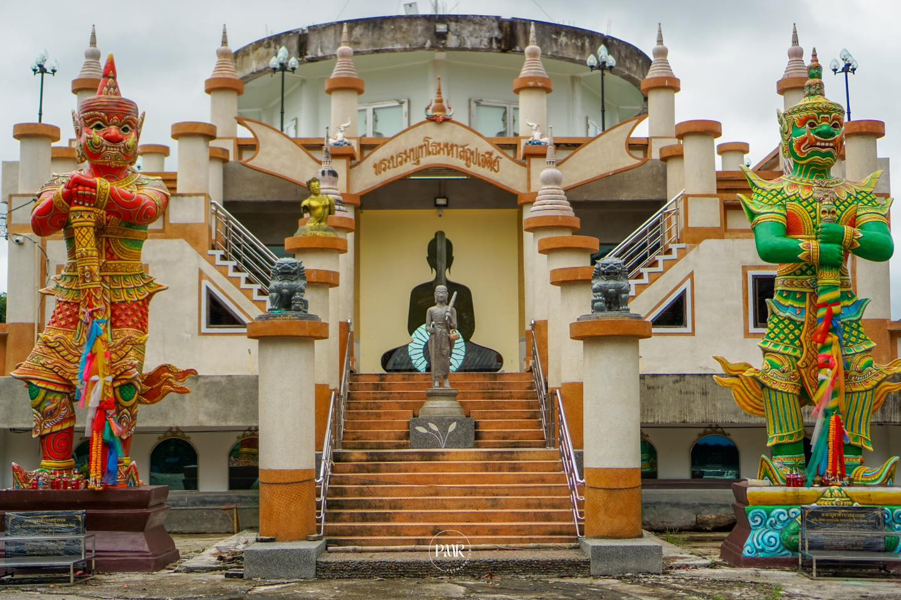
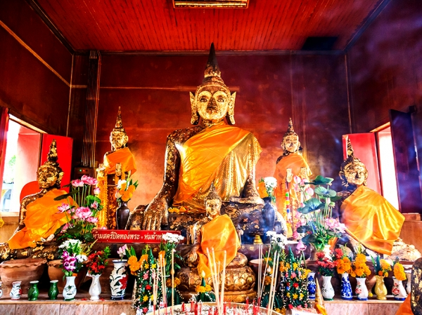

1. ต.บางรัก1. Bang Rak1. Bang Rak
เมืองท่าเก่าแก่ และวัดแจ้งAncient Port & Wat Chaeng古港 & Wat Chaeng
2. ต.นาตาล่วง2. Na Ta Luang2. Na Ta Luang
ตำนานตาด้วง-ตาล่วงLegend of Ta DuangTa Duang 的传说

3. ต.นาท่ามเหนือ3. Na Tham Nuea3. Na Tham Nuea
ริมธารพานเหล็กRim Than Phan LekRim Than Phan Lek

4. ต.นาโต๊ะหมิง4. Na To Ming4. Na To Ming
สวนพรุละหมาดPhru Lamad ParkPhru Lamad 公园

5. ต.นาพละ5. Na Phla5. Na Phla
ข้าวเบายอดม่วงGI RiceGI 大米
6. ต.บ้านโพธิ์6. Ban Pho6. Ban Pho
วัดขุนสิทธิ์ & เรือพระWat Khun Sit & Buddha BoatKhun Sit 寺 & 佛船

7. ต.บ้านควน7. Ban Khuan7. Ban Khuan
ประเพณีทานไฟTan Fai Tradition烤火传统
8. ต.หนองตรุด8. Nong Trud8. Nong Trud
มโนราห์ & กลองยาวManora & Long Drum诺拉舞 & 长鼓

9. ต.ทับเที่ยง9. Thap Thiang9. Thap Thiang
หอนาฬิกา & หมูย่างClock Tower & Roast Pork钟楼 & 烤猪肉

10. ต.น้ำผุด10. Nam Phut10. Nam Phut
วิสาหกิจชุมชนเลี้ยงไก่ดำBlack Chicken Enterprise黑鸡养殖企业
11. ต.นาบินหลา11. Na Bin La11. Na Bin La
พระสังกัจจายน์องค์ใหญ่Giant Phra Sangkachai巨大的 Phra Sangkachai
12. ต.ควนปริง12. Khuan Pring12. Khuan Pring
มีดพร้าบ้านนาป้อNa Po KnivesNa Po 刀
13. ต.นาท่ามใต้13. Na Tham Tai13. Na Tham Tai
อ่างเก็บน้ำหนองเกียบNong Kiap ReservoirNong Kiap 水库

14. ต.นาโยงใต้14. Na Yong Tai14. Na Yong Tai
จุดชมวิวควนสงฆ์Khuan Song ViewpointKhuan Song 观景点

15. ต.โคกหล่อ15. Khok Lo15. Khok Lo
วัดสาริการามWat SarikaramSarikaram 寺